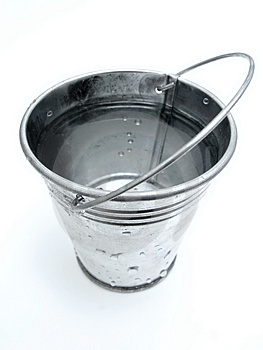
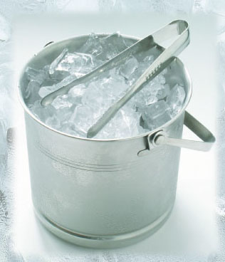
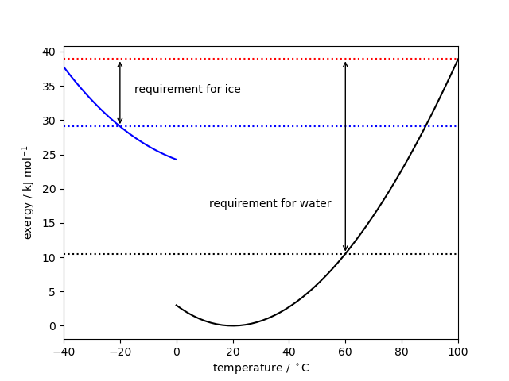

Navigation instructions
- Press at the bottom
left corner of the page to open a menu.
- Jump to any slide within this presentation to clicking its title.
- Press to "print" a *.pdf of the presentation.
- Press the
SPACEkey to progress forward in the presentation. - Use the
UP/DOWN/LEFT/RIGHTarrow keys or the arrows in the bottom right corner of the page to navigate the presentation.
Energy Conversion Technologies
Fundamentals of Exergy Analysis
L Lue
Department of Chemical and Process Engineering
University of Strathclyde
How can we quantify sustainability?

Press play at bottom of slide.
Do we need to conserve energy?
First law of thermodynamics: Energy cannot be created or destroyed, but it can transform from one type to another.
\begin{align*}
d(E + {\rm KE} + {\rm PE})
&= \delta Q - \delta W
\end{align*}
Press play at bottom of slide.
Second law of thermodynamics
Clausius statement: No process is possible whose sole result is the transfer of heat from a body of lower temperature to a body of higher temperature.
Kelvin-Planck statement: No process is possible in which the sole result is the absorption of heat from a reservoir and its complete conversion into work.
\begin{align*}
dS \ge \frac{\delta Q}{T}
\end{align*}

Press play at bottom of slide.
Combined first and second laws
Hot cup of coffee

Press play at bottom of slide.
Hot cup of coffee: Extracting work
Warm water or ice?
 Press play at bottom of slide.
Warm water or ice: Exergy analysis
Press play at bottom of slide.
Compressed air cylinder
General analysis: Closed systems
General analysis: Flow systems
\begin{align*}
\dot{W}
&=
-\frac{\partial\phi}{\partial t}
+ \sum_\alpha \dot{N}_\alpha \mu_{0,\alpha}
+ \sum_k \dot{N}_k B_k
\\
B &= H - T_0 S
\\
\phi
&=
d{U}
- T_0 d{S}
+ p_0 d{V}
- \sum_\alpha \mu_{0,\alpha} dN_{\alpha}
\end{align*}
Exergy / availability
Summary
- Quantifying sustainability
- Energy and work
- Connection between
- Example calculations
- Methods to determine thermodynamic work